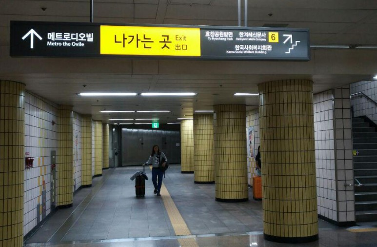

지하철로 오는 방법
공덕역은 공항철도, 경의선, 5호선, 6호선이 교차하는 역이예요. 공덕역에 내리셨으면, 우선 6번 출구를 향해 오셔야해요~

6번 출구 안내판을 따라 오시면, 계단으로 나가는 마지막 안내판이 보이실 거예요. 하지만 우리집을 오기 위해서 지하철 밖으로 나가실 필요가 없어요. 우리집은 지하철 출구와 연결이 되어 있거든요.
아래 사진처럼 보시면 메트로디오빌로 향하는 안내판이 보이면 직진을 하세요.
잠시 후 휘트니스센타로 들어가는 유리문이 보이실 거예요.
이 문을 힘차게 밀고 들어가서 바로 우회전을 하세요.
휘트니스센타 사물함들을 지나쳐서 쭉 걸어오세요. 이길 끝에 다다르면 아래 사진처럼 우측으로 철문이 나와요. 이 문을 열고 나오면 바로 엘레베이터가 있어요. 이제 다 왔어요~ 엘레베이터를 타고 올라오시기만 하면 된답니다.
※ 지하 2층에서 바로 연결되어 있는 이 통로는 밤12시부터 다음날 새벽 6시까지는 닫혀 있어요.
이 시간에 집으로 오실 때에는 위에 보여드린 계단을 이용해서 6번 출구로 나오셔야 한답니다.